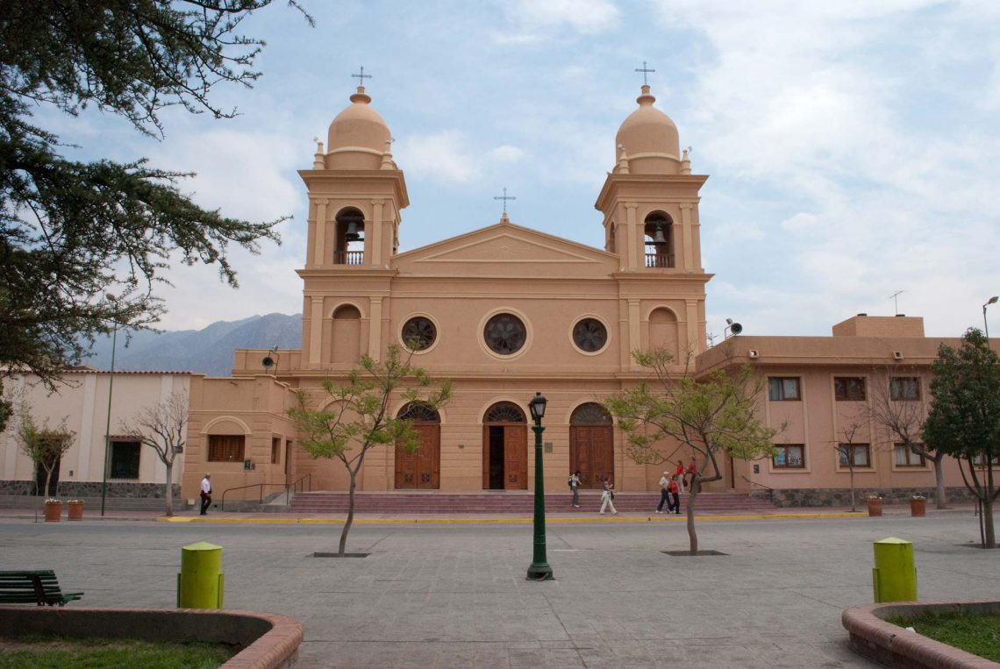

Como en todas las localidades de los valles , la hermosa iglesia de Cafayate,
se
encuentra frente a la Plaza Principal, fue diseñada por el arquitecto Catalán Pedro Coll, entre 1890
y
1895.
En su interior , la iglesia de Cafayate, conserva una imagen de Nuestra Señora del Rosario, que se
muestra sentada, por lo que los Cafayateños la han bautizado cariñosamente y respetuosamente “La
Sentadita”.
En su exterior se destacan las dos imponentes torres laterales con sus campanarios y las tres
atractivas
puertas que comunican con el atrio. Finalmente sus dos cúpulas la coronan con una cruz cada una.
El pueblo de Cafayate como todos los pueblos vallistos es de tradición religiosa y rinden homenaje a
su
patrona Nuestra Señora del Rosario todos los 7 de Octubre.

Corria el año 1934, época donde el transporte no era tal como lo conocemos. Desde
Alemanía, en la entrada de la Quebrada de las Conchas, a Cafayate, se hacía en estos micros. Asi era el
servicio.
En este caso, el sistema de transporte es uno de los lugares más turísticos de la actualidad, como es la
ruta nacional 68, camino a Cafayate.